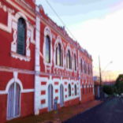
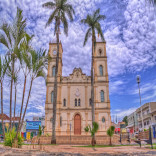
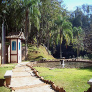

O colegio Allan Kadec
Fundado em 1907, por Euripedes Barsanulfo, o colégio foi criado inicialmente como nome de Liceu sacramento, em 1902, e referiu-se como uma entidade de educação na cidade de Sacramento,Minas Gerais, apontada como a primeira instituição de ensino com bases da pedagogia espírita
A visita é indispensável, Aqui temos o site do Colégio com maiores informações.
Igreja Matriz
Originalmente denominada de Basilica Menor do Santíssimo Sacramento apresentada pelo Patrocínio de Maria, tornou-se destaque regional por ser a primeira na Província de Uberaba, o que inclui todo o triângulo Mineiro e Alto Paranaíba. Ela é motivo de júbilo e louvor para todos da cidade.
O local é Lindo, venha conferir outros detalhes da igreja aqui no site de Minas Gerais.
A Gruta dos Palhares
O parque Municipal da Gruta dos Palhares está localizado na Rodovia Anterior Duarte Vilela a 10 Km do centro da cidade e abriga a caverna da Gruta dos Palhares, singular formação geológica em Arenito Botucatu. Descoberta em meados do século XIX, com 22 metros de altura, a Gruta é uma das principais atrações turistas da cidade.
Estar lá, é uma experiencia para a vida, alem de toda a beleza do local, axistem tambem pscinas, lanchonetes e restaurantes para o uso do publico. Mais informações a respeito de horarios, preçoes e localizações aqui no site de Minas Gerais.